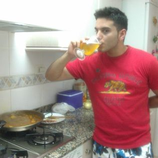
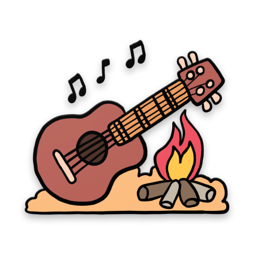
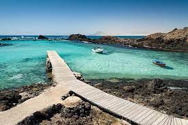
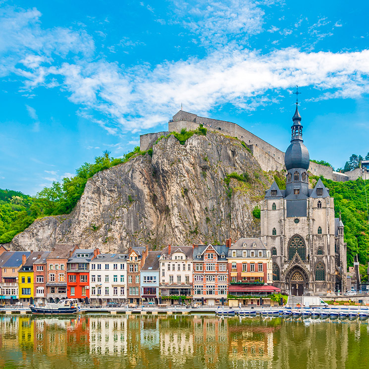
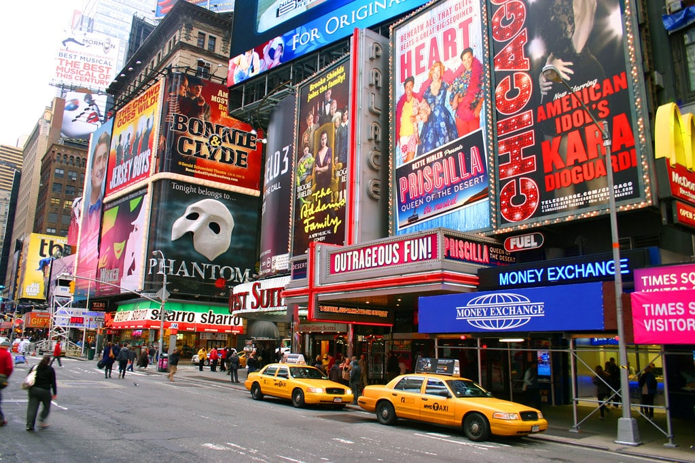
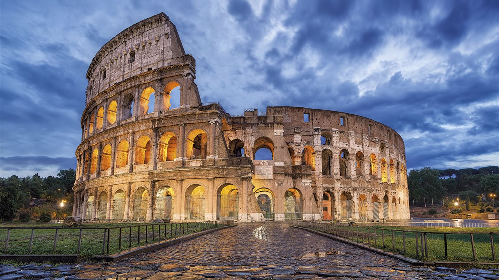
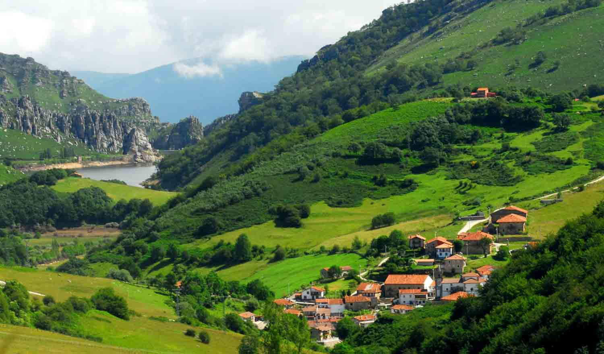

SOBRE MÍ
- Víctor Hernández González
- 27/09/1987
- Intento de FullStack Developer

AFICIONES
COCINA

Desde pequeñito la cocina despertó un interés muy fuerte en mí. Me encantaba destapar las ollas que tenia mi abuela en la cocina y ver que había preparado. Podía estar horas y horas viendo el canal cocina y mi sueño era aprender para convertirme algún dia en aquel chef que veía por televisión.
MÚSICA
Me gusta la música en general, sobre todo la que se pueda bailar xD. Pero lo que de verdad me hace pasar un buen rato es tocar la guitarra con mis amigos con unas cervezas y una buena barbacoa.
DEPORTE Y VIDEOJUEGOS
Para desconectar de la rutina del día a día me apunto a realizar alguna actividad deportiva para soltar adrenalina o le doy un poco a los videojuegos en pc o consola.
VIAJAR




